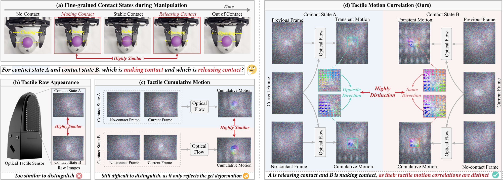
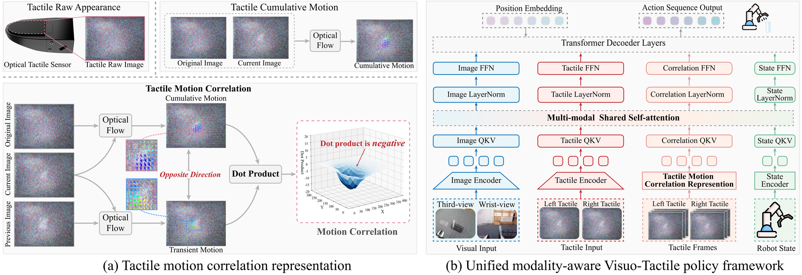
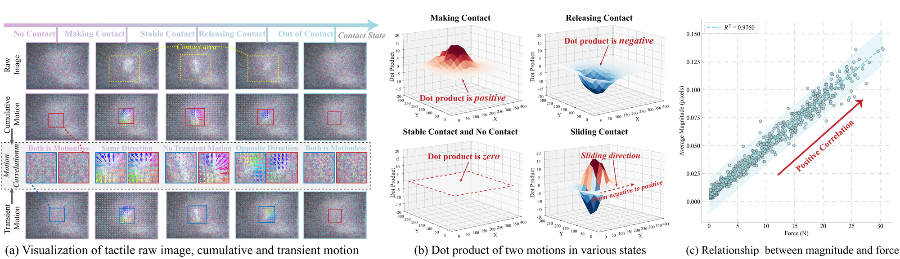
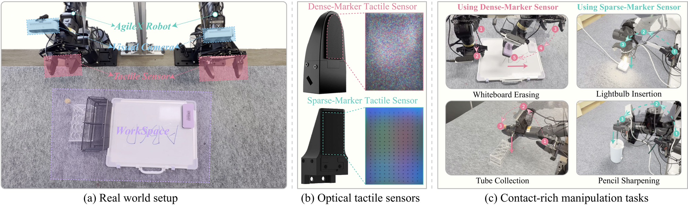
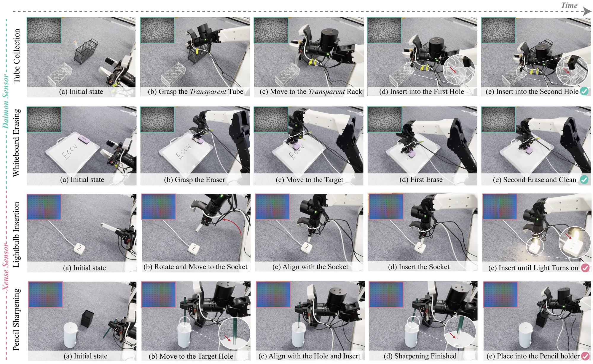
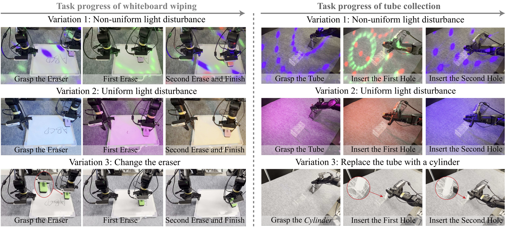

ECCV 2026

Tactile Motion Correlation (TMC). Fine-grained contact states such as making contact and releasing contact look nearly identical in raw tactile images and even in cumulative motion. By correlating transient and cumulative motion (same vs. opposite direction), TMC explicitly resolves this ambiguity, providing highly discriminative cues for contact-rich manipulation.
Visuo-tactile policies leveraging optical tactile sensors have shown great promise in contact-rich manipulation. These sensors achieve high spatial resolution and multi-dimensional force sensing by using an internal camera to monitor the deformation of their elastic gel surface, thereby indirectly inferring tactile cues. Despite their advantages, extracting the fine-grained contact states necessary for contact-rich manipulation remains an open challenge. Existing methods typically use either raw images or cumulative motion fields, both of which are prone to perception ambiguity: raw images mainly capture appearance changes, while cumulative motion only reflects aggregate gel deformation. As a result, distinct contact states can exhibit highly similar patterns.
To address this, we explore the dynamic priors of tactile motion and discover that the correlation between transient and cumulative motion can explicitly distinguish fine-grained contact states. Based on this insight, we propose a motion-aware tactile representation, Tactile Motion Correlation (TMC). Beyond representation, effective fusion of tactile and visual modalities is also critical. We take advantage of the Mixture-of-Transformers (MoT) architecture and propose ViTacMotor, a unified yet modality-aware visuo-tactile policy that captures cross-modal complementarity while preserving modality-specific properties. Extensive experiments on four challenging contact-rich manipulation tasks demonstrate the superior performance of our method.
We reveal that the correlation between transient and cumulative tactile motions explicitly distinguishes fine-grained contact states, resolving the perceptual ambiguity of prior representations.
A unified MoT-based visuo-tactile policy that captures cross-modal interactions while preserving the unique properties of each modality.
Extensive experiments on four challenging real-world contact-rich tasks with two different optical tactile sensors demonstrate superior performance and robustness.

Overview of ViTacMotor. (a) TMC models the correlation between transient and cumulative tactile motion through their dot product to explicitly distinguish fine-grained contact states. (b) A unified yet modality-aware visuo-tactile fusion framework built on the Mixture-of-Transformers architecture captures cross-modal complementarity while preserving the unique properties of each modality.

Analysis of TMC properties (Daimon sensor). (a) Raw images and cumulative motion are ambiguous across contact states, while the transient–cumulative correlation is highly discriminative. (b) The dot product cleanly separates contact states in 3D distribution. (c) The dot-product magnitude is positively correlated with contact force.

Real-world setup. (a) A 6-DoF Agilex arm with a 1-DoF gripper, two cameras (wrist & third-view), and two optical tactile sensors. (b) Two sensors, Daimon and Xense, with distinct markers and gels. (c) Four contact-rich tasks: tube collection, whiteboard erasing, lightbulb insertion, and pencil sharpening.
Side-by-side rollouts: Baseline vs. ViTacMotor (Ours) on each contact-rich task.
Baseline
ViTacMotor (Ours)
Baseline
ViTacMotor (Ours)
Baseline
ViTacMotor (Ours)
Baseline
ViTacMotor (Ours)

Policy execution. ViTacMotor with two tactile sensors (Daimon and Xense) on four contact-rich manipulation tasks: tube collection, whiteboard erasing, lightbulb insertion, and pencil sharpening.
Success rate (%) over 15 trials. Best per column in bold; numbers in parentheses are training demos.
| Tasks Requiring In-Hand State Information | |||||||
|---|---|---|---|---|---|---|---|
| Method | Tube Collection (35) | Lightbulb Insertion (60) | |||||
| Grasp | 1st Hole | 2nd Hole | Whole | Align | Insert | Whole | |
| ACT* | 66.7 | 60.0 | 53.3 | 53.3 | 60.0 | 13.3 | 13.3 |
| DP* | 73.3 | 53.3 | 40.0 | 40.0 | 53.3 | 6.7 | 6.7 |
| ACT + T | 86.7 | 60.0 | 60.0 | 60.0 | 60.0 | 26.7 | 26.7 |
| Policy Consensus | 80.0 | 53.3 | 53.3 | 53.3 | 53.3 | 26.7 | 26.7 |
| TactileACT | 93.3 | 73.3 | 60.0 | 60.0 | 60.0 | 40.0 | 40.0 |
| ViTacMotor | 93.3 | 80.0 | 73.3 | 73.3 | 60.0 | 40.0 | 40.0 |
| Tasks Requiring Fine-Grained Force Control | |||||||
| Method | Whiteboard Erasing (50) | Pencil Sharpening (40) | |||||
| Grasp | 1st Erase | 2nd Erase | Whole | Sharpen | Holder | Whole | |
| ACT* | 100.0 | 60.0 | 46.7 | 46.7 | 40.0 | 33.3 | 33.3 |
| DP* | 100.0 | 66.7 | 40.0 | 40.0 | 33.3 | 33.3 | 33.3 |
| ACT + T | 100.0 | 80.0 | 60.0 | 60.0 | 40.0 | 40.0 | 40.0 |
| Policy Consensus | 93.3 | 73.3 | 66.7 | 66.7 | 33.3 | 33.3 | 33.3 |
| TactileACT | 100.0 | 86.7 | 73.3 | 73.3 | 46.7 | 46.7 | 46.7 |
| ViTacMotor | 100.0 | 86.7 | 86.7 | 86.7 | 60.0 | 60.0 | 60.0 |
| Base | TMC | MoT | White. Erase | Tube Coll. |
|---|---|---|---|---|
| ✓ | 46.7 | 53.3 | ||
| ✓ | ✓ | 73.3 | 66.7 | |
| ✓ | ✓ | 66.7 | 60.0 | |
| ✓ | ✓ | ✓ | 86.7 | 73.3 |
| Tactile Representation | ACT | DP |
|---|---|---|
| Raw Image | 60.0 | 53.3 |
| Cumulative Motion | 53.3 | 40.0 |
| TMC (Ours) | 73.3 | 66.7 |

Robustness to environment and object variations. Under temporally varying, spatially (non-)uniform lighting and object changes (different erasers/inks, a cylinder in place of the tube), ViTacMotor still completes the tasks — thanks to TMC's motion-based, appearance-agnostic design.
@inproceedings{vitacmotor2026,
title = {Seeing Touch from Motion: A Unified Modality-Aware Visuo-Tactile
Policy with Tactile Motion Correlation},
author = {Xu, Shengqi and Zhong, Guojin and Liu, Yang and Wang, Fanjie and
Luo, Hu and Zhou, Hanyu and Zhang, Weiyao and Ye, Ziyi and
Wu, Zuxuan and Jiang, Yugang},
booktitle = {Proceedings of the European Conference on Computer Vision (ECCV)},
year = {2026}
}